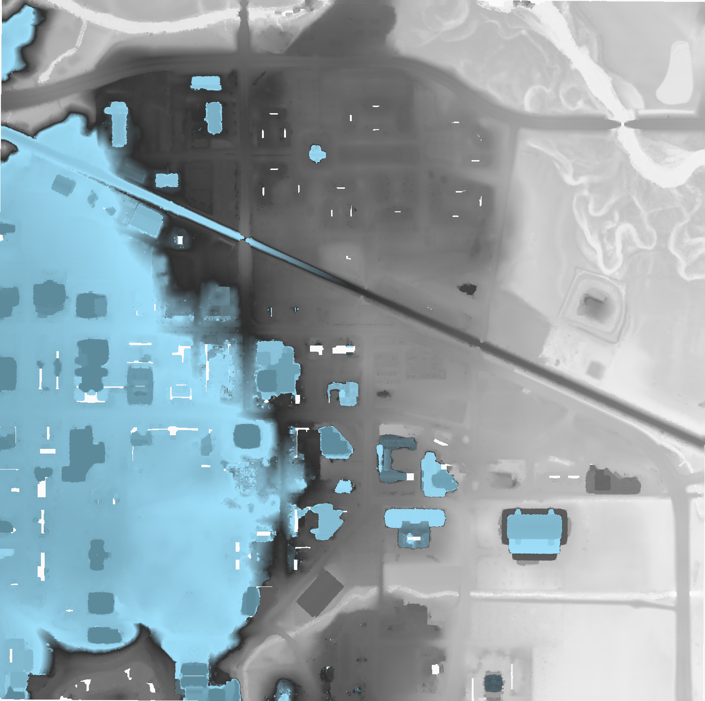

Reading data from EPT¶
Introduction¶
This tutorial describes how to use Conda, Entwine, PDAL, and GDAL to read data from the USGS 3DEP AWS Public Dataset. We will be using PDAL’s readers.ept to fetch data, we will filter it for noise using filters.outlier, we will classify the data as ground/not-ground using filters.smrf, and we will write out a digital terrain model with writers.gdal. Once our elevation model is constructed, we will use GDAL gdaldem operations to create hillshade, slope, and color relief.
Install Conda¶
We first need to install PDAL, and the most convenient way to do that is by installing Miniconda. Select the 64-bit installer for your platform and install it as directed.
Install PDAL¶
Once Miniconda is installed, we can install PDAL into a new Conda Environment that we created for this tutorial. Open your Anaconda Shell and start issuing the following commands:
Create the environment
conda create -n iowa -y
Activate the environment
conda activate iowa
Install PDAL
conda install -c conda-forge pdal -y
Insure PDAL works by listing the available drivers
pdal --drivers
(iowa) [hobu@kasai ~]$ pdal --drivers
Once you confirmed you see output similar to that in your shell, your PDAL installation should be good to go.
Write the Pipeline¶
PDAL uses the concept of pipelines to describe the reading, filtering, and writing of point cloud data. We will construct a pipeline that will do a number of things in succession.
{kind=link}
Pipeline diagram. The data are read from the Entwine Point Tile resource at
https://usgs.entwine.io for Iowa using readers.ept and filtered through a
number of steps until processing is complete. The data are then written to
an iowa.laz and iowa.tif file.
Pipeline¶
Create a file called
iowa.jsonwith the following content:Note
The file is also available from https://gist.github.com/hobu/ee22084e24ed7e3c0d10600798a94c31 for convenient copy/paste)
{
"pipeline": [
{
"bounds": "([-10425171.940, -10423171.940], [5164494.710, 5166494.710])",
"filename": "https://s3-us-west-2.amazonaws.com/usgs-lidar-public/IA_FullState",
"type": "readers.ept",
"tag": "readdata"
},
{
"limits": "Classification![7:7]",
"type": "filters.range",
"tag": "nonoise"
},
{
"assignment": "Classification[:]=0",
"tag": "wipeclasses",
"type": "filters.assign"
},
{
"out_srs": "EPSG:26915",
"tag": "reprojectUTM",
"type": "filters.reprojection"
},
{
"tag": "groundify",
"type": "filters.smrf"
},
{
"limits": "Classification[2:2]",
"type": "filters.range",
"tag": "classify"
},
{
"filename": "iowa.laz",
"inputs": [ "classify" ],
"tag": "writerslas",
"type": "writers.las"
},
{
"filename": "iowa.tif",
"gdalopts": "tiled=yes, compress=deflate",
"inputs": [ "writerslas" ],
"nodata": -9999,
"output_type": "idw",
"resolution": 1,
"type": "writers.gdal",
"window_size": 6
}
]
}
Stages¶
readers.ept¶
readers.ept reads the point cloud data from the EPT resource on AWS. We give
it a URL to the root of the resource in the filename option, and we also
give it a bounds object to define the window in which we should select data
from.
The bounds object is in the form ([minx, maxx], [miny, maxy]).
Warning
If you do not define a bounds option, PDAL will try to read the
data for the entire state of Iowa, which is about 160 billion points.
Maybe you have enough memory for this…
{kind=link}
The EPT reader reads data from an EPT resource with PDAL. Options available in PDAL 1.9+ allow users to select data at or above specified resolutions.
filters.range¶
The data we are selecting may have noise properly classified, and we can use
filters.range to keep all data that does not have a Classification Dimensions
value of 7.
{kind=link}
The filters.range filter utilizes range selection to allow users to select data for processing or removal. The filters.mongoexpression filter can be used for even more complex logic operations.
filters.assign¶
After removing points that have noise classifications, we need to reset all
of the classification values in the point data. filters.assign takes the
expression Classification [:]=0 and assigns the Classification for
each point to 0.
{kind=link}
:ref`filters.assign` can also take in an option to apply assignments based on a conditional. If you want to assign values based on a bounding geometry, use filters.overlay.
filters.reprojection¶
The data on the AWS 3DEP Public Dataset are stored in Web Mercator coordinate system, which is not suitable for many operations. We need to reproject them into an appropriate UTM coordinate system (EPSG:26915).
{kind=link}
filters.reprojection can also take override the incoming coordinate
system using the a_srs option.
filters.smrf¶
The Simple Morphological Filter (filters.smrf) classifies points as ground or not-ground.
{kind=link}
filters.smrf provides a number of tuning options, but the defaults tend to work quite well for mixed urban environments on flat ground (ie, Iowa).
filters.range¶
After we have executed the SMRF filter, we only want to keep points that
are actually classified as ground in our point stream. Selecting for
points with Classification[2:2] does that for us.
{kind=link}
Remove any point that is not ground classification for our DTM generation.
writers.gdal¶
Having filtered our point data, we’re now ready to write a raster digital
terrain model with writers.gdal. Interesting options we choose here are
to set the nodata value, specify only outputting the inverse distance
weighted raster, and assigning a resolution of 1 (m). See writers.gdal
for more options.
{kind=link}
Output a DTM at 1m resolution.
writers.las¶
We can also write a LAZ file containing the same points that were used to make the elevation model in the section above. See writers.las for more options.
{kind=link}
Also output the LAZ file as part of our processing pipeline.
Execute the Pipeline¶
Save the PDAL pipeline in Pipeline to a file called
iowa.jsonInvoke the PDAL pipeline command
pdal pipeline iowa.json
Add the
--debugoption if you would like information about how PDAL is fetching and processing the data.pdal pipeline iowa.json --debug
Save a color scheme to
dem-colors.txt# Color ramp for Iowa State Campus 270.187,250,250,250,255,270.2 272.059,230,230,230,255,272.1 272.835,209,209,209,255,272.8 273.985,189,189,189,255,274 276.204,168,168,168,255,276.2 277.835,148,148,148,255,277.8 279.199,128,128,128,255,279.2 280.964,107,107,107,255,281 282.809,87,87,87,255,282.8 283.745,66,66,66,255,283.7 284.547,46,46,46,255,284.5 286.526,159,223,250,255,286.5 296.901,94,139,156,255,296.9
Invoke
gdaldemto colorize a PNG file for your TIFFgdaldem color-relief iowa.tif dem-colors.txt iowa-color.png
View your raster
